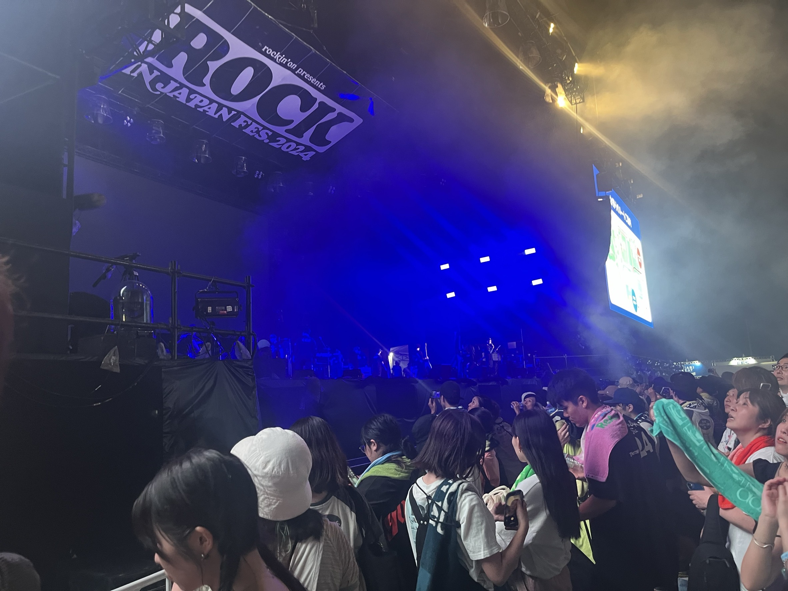

One of my hobbies is going to music festivals. I went a music festival for the first time in May 2024. I really enjoyed and after that, I went 6 music festivals in 1 year. My favorite artists are Gen Hoshino, go! go! vanillas, Tele and so on. Their songs always encourage me.
The charm of music festivals is that I can discover the new artists! At first, we decide the date depends on when my favorite artists will perform. However, in the music festival, so many artists appear. Therefore, we also see artists who we did not know. I started to like go! go! vanillas and Tele - part of my favorite artists- at the music festival. After I discovered the favorite artist, I often go to their solo live.
Also, at the music festival, we enjoy the foods that is served in foods stalls. We can eat various foods from all over the country. Especially, I like roast beef bowl.
Many music festivals were held in summer, but there is the music festival in winter, in which we can spend new year's eve. Last year, I went there and counted down with my favorite band. I really enjoyed it.
